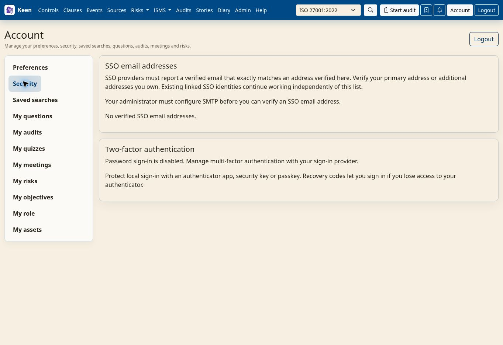

Using Keen
Account security and preferences
Chapter 17 of 17
Protect your local account
If you sign in with a local Keen account, you can add a second factor and keep recovery codes. This chapter shows how to set that up, what sign-in looks like afterwards, and what to do when an authenticator is lost. Single sign-on accounts follow the identity provider's policy instead.


Open Account → Security → Manage account security and confirm your password. If two-factor authentication is already enabled, verify with an existing authenticator or a recovery code. That opens a five-minute management window.
- Authenticator app. Scan the QR code or enter the setup key into your app, then enter its six-digit code to complete enrolment.
- Security key or passkey. Give it a recognisable name, choose Add security key / passkey and follow your browser's prompt. You can register up to ten.
- Recovery codes. Save the ten codes shown after your first authenticator is registered. Each replaces the second factor for one sign-in. Keen stores only their hashes and cannot show them again.
What sign-in looks like afterwards
Sign in with your username and password as before. Keen then prompts for a registered security key or passkey, or shows the authenticator-code field when that is your method, and remembers your last successful method in this browser. If verification fails or is cancelled, choose another method or a recovery code; “Can't use this method?” offers the alternatives.
Replace a lost authenticator
Sign in with a recovery code, open Security and verify again with another unused code. Register a replacement, remove the lost authenticator and replace your recovery codes; replacing them invalidates every previous unused code. Factor changes sign out your other local sessions, and Continue to Keen finishes the current one.
If everything is lost. An administrator can require two-factor authentication for administrators or for every local account; required accounts enrol before entering Keen and keep at least one authenticator. If all authenticators and recovery codes are gone, contact the operator of your Keen installation for an account-security reset.
Account security emails
When your installation has mail configured and your account has an e-mail address, Keen tells you about security-relevant changes to your account.
You receive an alert for a successful sign-in from an IP address Keen has not recorded for your account, for password changes and administrator password resets, and for authenticator additions or removals, recovery-code replacement and operator MFA resets. Each e-mail shows the account, the installation, the UTC time and the IP address.
If you do not recognise the activity, open your known Keen address directly and contact your administrator.
Going deeper: when alerts are sent
A sign-in alert is generated after authentication completes, including the second factor when required, so a different mobile, VPN or ISP address can trigger one. Emails are delivered in the background; keep your account e-mail address correct. Your administrator configures the mail service and the trusted proxy addresses needed to identify browser IPs.